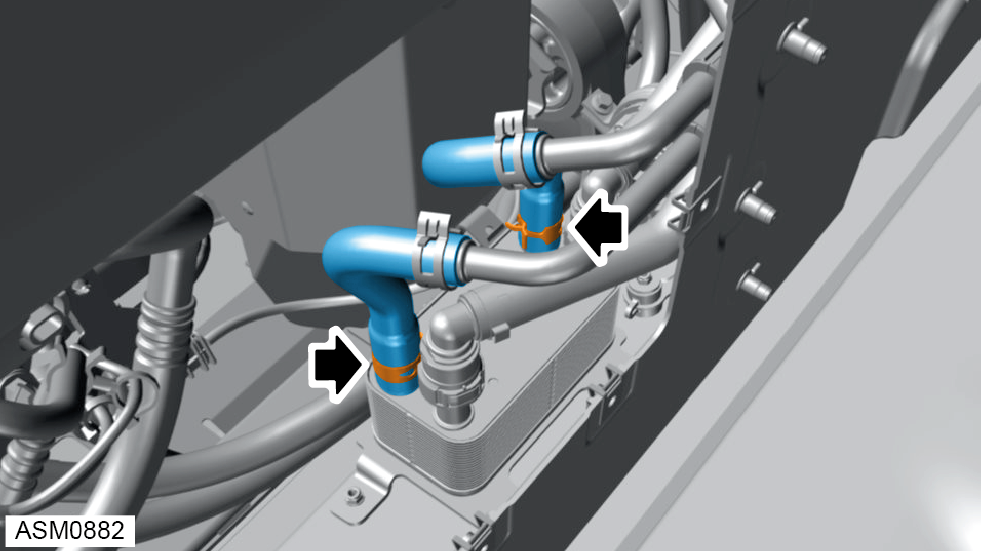
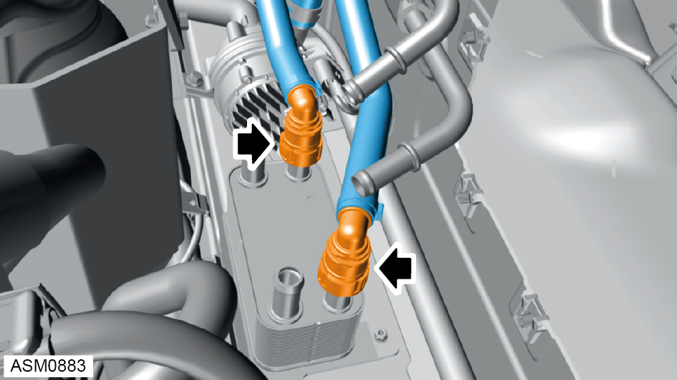
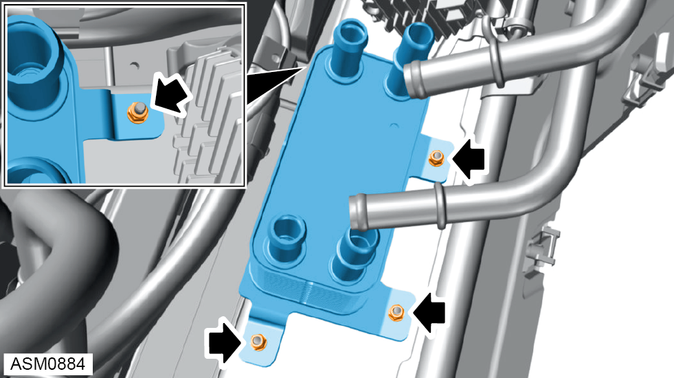

Oil Cooler - V6
Print
Operation Code: 46.09.01-02
Removal
- Remove rear bulkhead access panel. Refer to procedure.

- Disengage hose clamps (x2) securing oil hoses to oil cooler.
- Remove oil hoses (x2) from oil cooler.

- Disengage quick connectors (x2) securing coolant hoses to oil cooler.
- Remove coolant hoses (x2) from oil cooler.
 WARNING: Coolant is a toxic substance and can be lethal if ingested.
WARNING: Coolant is a toxic substance and can be lethal if ingested.
NOTE: Drain coolant into a suitable container and dispose of appropriately.

- Remove M5 nyloc nuts and washers (x4) securing oil cooler to vehicle. Torque 8 Nm.
NOTE: Always record quantity and fitted position of washers.
- Remove oil cooler.
 CAUTION: Take car when removing the oil cooler as any excess fluid can cause damage to interior components.
CAUTION: Take car when removing the oil cooler as any excess fluid can cause damage to interior components.
Installation
- Installation is the reverse of removal procedure except for the following:
- Refill coolant.
- Start engine and allow to idle.
NOTE: Run the engine with the reservoir cap off to bleed the system.
- Refit coolant reservoir cap.
- Check transmission oil level. Refer to procedure.